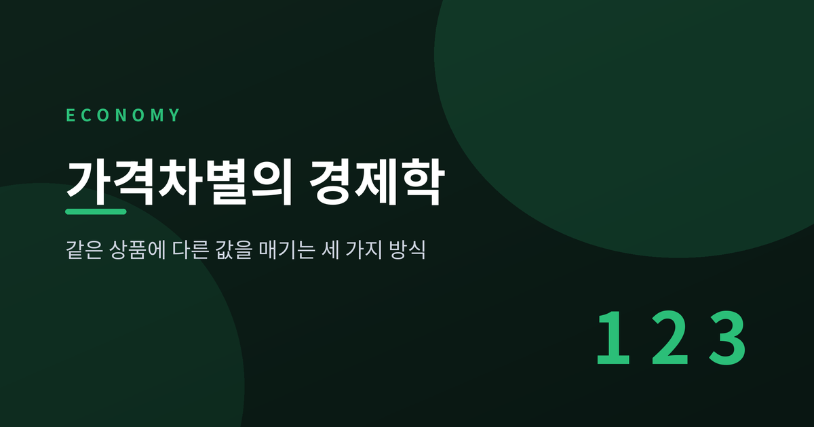
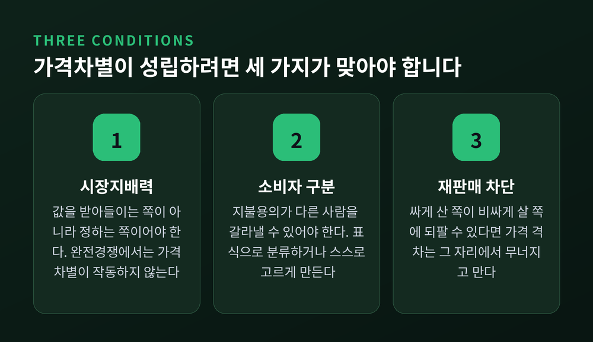
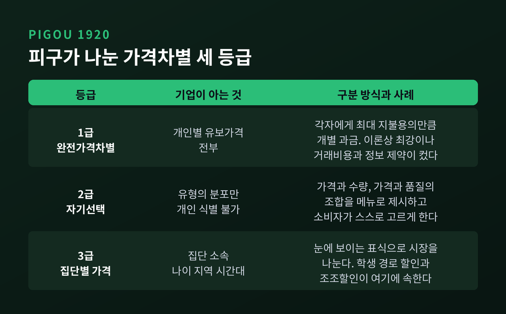
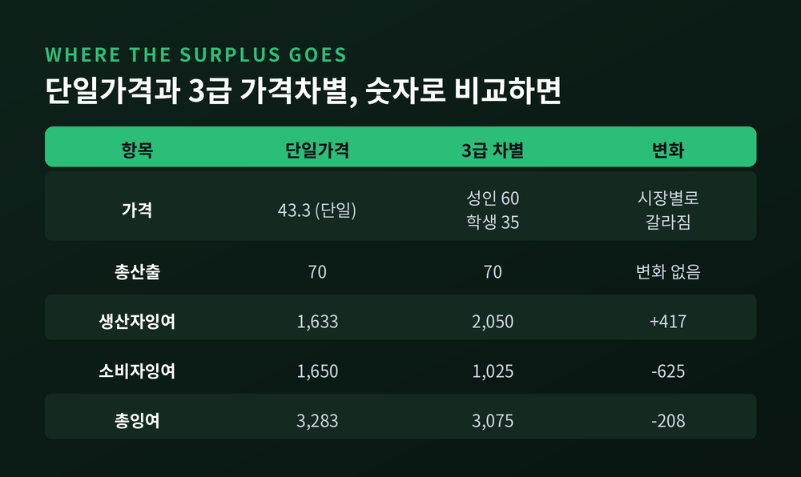
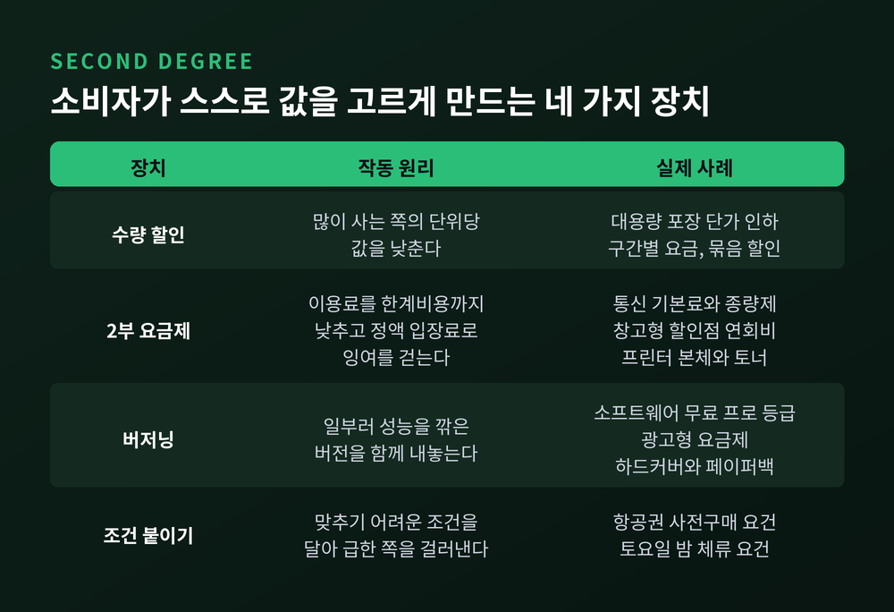
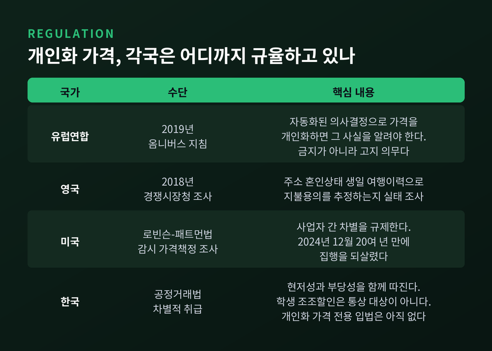

가격차별의 경제학, 같은 상품에 다른 값을 매기는 세 가지 방식

오늘은 가격차별에 대해 이야기해 보려 합니다. 같은 좌석, 같은 영화, 같은 소프트웨어인데 사람마다 값이 달라지는 일이 왜 벌어지는지, 그 값이 어떻게 계산되는지를 숫자와 함께 따라가 보겠습니다.
- 가격차별은 비용 차이로 설명되지 않는 가격 격차입니다. 배송비가 달라서 값이 다른 것은 여기에 들어가지 않습니다.
- 성립하려면 세 가지가 동시에 맞아야 합니다. 시장지배력, 소비자를 갈라낼 수단, 그리고 재판매 차단입니다.
- 피구는 이를 1급·2급·3급으로 나눴습니다. 1급은 효율을 최대로 끌어올리지만, 소비자 몫은 0이 됩니다.
값이 다르다고 모두 가격차별은 아닙니다
먼저 용어부터 정리하겠습니다.
가격차별은 한계비용 차이로 설명되지 않는 가격 격차를 뜻합니다. 제주도로 보내는 배송비가 더 비싼 것은 실제로 비용이 더 들기 때문이니 가격차별이 아닙니다. 비용은 똑같은데 값이 다를 때, 비로소 가격차별이라 부릅니다.
성립 조건은 세 가지입니다.
첫째, 시장지배력이 있어야 합니다. 기업이 가격을 받아들이는 쪽이 아니라 정하는 쪽이어야 합니다. 완전경쟁 시장에서는 가격차별이 아예 작동하지 않습니다.
둘째, 소비자를 갈라낼 수 있어야 합니다. 지불용의가 다른 사람을 구분하는 방법은 두 갈래입니다. 나이나 지역처럼 눈에 보이는 표식으로 기업이 직접 분류하거나, 여러 조건을 늘어놓고 소비자가 스스로 고르게 만드는 것입니다.
셋째, 재판매를 막을 수 있어야 합니다. 싸게 산 사람이 비싸게 살 사람에게 되팔 수 있다면 가격 격차는 그 자리에서 무너집니다.
영화관 좌석과 항공권에서 가격차별이 유독 흔한 이유가 여기에 있습니다. 현장에서 신분 확인이 되고, 표를 남에게 넘기기가 사실상 불가능합니다.

피구가 나눈 세 등급
이 세 단계 분류는 영국 경제학자 아서 세실 피구가 1920년 『후생경제학』에서 도입한 것입니다. 기준은 단순합니다. 기업이 소비자에 대해 무엇을 아느냐입니다.
1급(완전가격차별)은 기업이 모든 소비자의 유보가격을 정확히 알고, 각자에게 딱 그만큼을 받아내는 경우입니다. 이론상 가장 강력합니다.
현실에서 거의 관찰되지 않았던 이유는 두 가지였습니다. 사람마다 다른 값을 협상하는 거래비용이 너무 컸고, 애초에 개인의 지불용의를 알아낼 방법이 없었습니다.
2급(자기선택)은 기업이 누가 누구인지 모르는 채로 작동합니다. 대신 서로 다른 가격과 수량, 가격과 품질의 조합을 메뉴처럼 늘어놓습니다. 지불용의가 높은 사람은 비싼 조합을, 낮은 사람은 값싸고 작은 조합을 스스로 고릅니다. 기업은 그 선택을 신호로 읽습니다.
3급(집단별 가격)은 눈에 보이는 특성으로 시장을 몇 덩어리로 나누는 방식입니다. 학생 할인, 경로 할인, 조조할인이 모두 여기에 속합니다.

숫자로 따라가 보는 잉여의 이동
말로만 하면 감이 잘 오지 않습니다. 교과서 표준 설정으로 직접 계산해 보겠습니다.
한계비용을 20이라 두겠습니다. 성인 시장의 수요는 Q = 100 − P, 학생 시장의 수요는 Q = 100 − 2P로 놓습니다. 학생 쪽이 값에 더 민감한 시장입니다.
먼저 3급 가격차별입니다. 시장을 나눠 각각 최적화합니다.
성인 시장의 한계수입은 100 − 2Q입니다. 이를 20과 같게 두면 Q = 40, 가격은 60이 나옵니다. 이윤은 (60 − 20) × 40 = 1,600입니다.
학생 시장의 역수요는 P = 50 − Q/2이고 한계수입은 50 − Q입니다. 같은 방식으로 풀면 Q = 30, 가격은 35입니다. 이윤은 (35 − 20) × 30 = 450입니다.
합치면 총산출 70, 총이윤 2,050입니다.
이번에는 단일가격입니다. 두 수요를 더하면 Q = 200 − 3P가 됩니다. 역수요는 P = (200 − Q)/3이고 한계수입은 (200 − 2Q)/3입니다. 20과 같게 두면 Q = 70, 가격은 130/3, 약 43.3이 나옵니다. 이윤은 약 1,633입니다.
여기서 눈여겨볼 대목이 하나 있습니다. 총산출이 70으로 똑같습니다.
소비자잉여를 재 보겠습니다. 단일가격일 때 성인 쪽이 약 1,606, 학생 쪽이 약 44로 합계 1,650입니다. 가격차별을 하면 성인 800, 학생 225로 합계 1,025로 내려앉습니다.
정리하면 이렇습니다. 소비자에게서 625가 빠져나갔는데, 생산자에게 옮겨간 것은 417뿐입니다. 나머지 208은 누구에게도 가지 않고 사라졌습니다.

총산출이 늘지 않으면 후생은 나빠집니다
위 계산은 우연이 아닙니다. 이론이 예측한 그대로입니다.
슈말렌지가 1981년에 제기하고 배리언이 1985년에 정리한 결론은 이렇습니다. 3급 가격차별이 단일가격보다 후생을 높이려면 총산출이 늘어나는 것이 필요조건입니다. 총산출이 그대로거나 줄어들면 후생은 반드시 나빠집니다.
이유는 배분에 있습니다. 집단마다 값이 다르면 집단 간 한계효용이 어긋납니다. 같은 70개를 팔아도 누가 사느냐가 잘못 배분됩니다. 이 손실을 메우려면 파이 자체가 커져야 하는데, 선형수요에서는 커지지 않습니다.
그렇다면 가격차별은 언제 후생을 높일까요.
단일가격에서는 아예 공급되지 않던 시장이 열릴 때입니다. 값에 민감한 시장을 통째로 포기하고 있던 기업이 차별을 통해 그 시장에 진입하면, 총산출이 늘고 후생이 개선될 수 있습니다. 개발도상국 의약품 차등가격이 이 논리로 옹호됩니다.
아기레·코완·비커스는 2010년에 더 정교한 충분조건을 제시했습니다. 차별가격 근방에서 약한 시장의 역수요가 강한 시장보다 더 볼록하면 후생이 개선된다는 것입니다.
그러니 "가격차별은 좋다" 또는 "나쁘다"는 단정은 성립하지 않습니다. 수요곡선의 휘어진 정도와 새 시장이 열리는지 여부에 달려 있습니다.
2급 — 소비자가 스스로 값을 고르게 만드는 법
2급 가격차별은 설계의 영역입니다. 기업은 소비자를 식별하지 못한 채, 메뉴만으로 분류를 유도합니다.
2부 요금제가 대표적입니다. 월터 오이가 1971년 『계간 경제학지』에 실은 「디즈니랜드 딜레마」가 이 문제를 처음 정식화했습니다. 놀이공원은 입장료를 비싸게 받고 기구를 공짜로 태울 것인가, 입장은 공짜로 하고 기구마다 비싸게 받을 것인가.
논문의 답은 명쾌했습니다. 이윤을 극대화하려면 이용료는 한계비용까지 낮추고, 소비자잉여 전부를 정액 입장료로 걷는 것이 최선입니다.
앞의 성인 시장 숫자로 확인해 보겠습니다. 이용료를 20으로 낮추면 80개가 팔리고, 그때 소비자잉여는 3,200입니다. 이 3,200을 입장료로 받으면 이윤이 3,200이 됩니다. 단일가격 독점이윤 1,600의 두 배입니다. 가격 두 개만으로 1급과 같은 결과에 도달한 셈입니다.
통신 기본료와 종량제, 창고형 할인점 연회비, 프린터 본체를 싸게 팔고 토너를 비싸게 받는 구조가 모두 같은 설계입니다.
버저닝은 한 걸음 더 나갑니다. 데네케레와 맥아피는 1996년 「손상된 재화」에서, 기업이 일부러 성능을 깎은 제품을 만들어 파는 현상을 분석했습니다. 흥미로운 결과가 있습니다. 단일가격에서는 고지불용의 시장만 공급되던 상황이라면, 열화 버전 출시가 파레토 개선이 될 수 있습니다. 두 부류의 소비자와 생산자가 모두 나아집니다.
항공권의 조건 붙이기는 가장 정교한 사례입니다. 사전구매 요건과 토요일 밤 체류 요건이 출장객과 관광객을 갈라냅니다. 출장객은 일정이 촉박하고 주말에 집에 가고 싶어 하니 조건을 못 맞춥니다. 관광객은 맞출 수 있습니다.
실증도 이를 뒷받침합니다. 주말에 표를 사면 값이 싸지는 효과가 출장과 관광이 섞인 노선에서는 약 7%였지만, 관광객 위주 노선에서는 약 2%에 그쳤습니다. 구분할 필요가 없는 시장에서는 차별도 약해집니다.

3급 — 학생 할인이 선의가 아닌 이유
3급 가격차별에는 오해가 하나 붙어 있습니다. 학생이니까 형편을 봐준다는 생각입니다.
경제학의 답은 다릅니다. 역탄력성 규칙(램지 가격책정) 때문입니다.
공식은 이렇습니다. 가격에서 한계비용을 뺀 뒤 가격으로 나눈 값이, 수요의 가격탄력성의 역수와 같아집니다. 다시 말해 한계비용 위에 얹는 마진은 탄력성에 반비례합니다.
앞의 숫자로 검산해 보겠습니다.
성인 시장의 최적점은 가격 60, 수량 40이었습니다. 이때 탄력성은 −1 × (60/40) = −1.5입니다. 마진율은 (60 − 20)/60 = 0.667이고, 1을 1.5로 나눈 값과 정확히 같습니다.
학생 시장의 최적점은 가격 35, 수량 30이었습니다. 탄력성은 −2 × (35/30) ≈ −2.33입니다. 마진율은 (35 − 20)/35 ≈ 0.429로, 역시 1을 2.33으로 나눈 값입니다.
탄력성이 큰 쪽이 싸게 삽니다. 학생이 싸게 사는 것은 학생이어서가 아니라, 학생 집단의 수요가 값에 더 민감하기 때문입니다.
이 규칙은 원래 프랭크 램지가 1927년 최적조세 문제를 풀며 도출한 것이었습니다. 이후 마르셀 부아퇴가 1956년에 자연독점 요금규제에 가져다 썼습니다. 공익을 위한 차선책으로 태어난 공식이, 이윤극대화 기업의 행동을 그대로 설명한다는 점이 얄궂습니다.
조조할인도 마찬가지입니다. 평일 아침에 극장에 갈 수 있는 사람과 금요일 저녁에만 갈 수 있는 사람은 탄력성이 다릅니다. 시간대가 곧 신분 표식 역할을 합니다.
개인화 가격, 1급이 현실로 내려온 자리
예전에는 1급 가격차별이 칠판 위의 극단적 가정이었습니다. 지금은 사정이 달라졌습니다.
OECD는 2018년 배경보고서에서 가격책정 알고리즘과 상세한 소비자 프로필이 1급 가격차별을 실현 가능하게 만들고 있다고 정리했습니다. 동시에 후생 효과는 모호하다고 못 박았습니다. 사회후생과 소비자잉여가 함께 오를 수도, 함께 내릴 수도, 사회후생만 오르고 소비자잉여는 내릴 수도 있다는 것입니다.
실증 추정도 나왔습니다. 벤저민 실러는 2016년 브랜다이스대 워킹페이퍼에서 넷플릭스 자료로 개인화 가격의 효과를 계산했습니다. 웹 브라우징 이력으로 가격을 맞추면 이윤이 14.55% 늘고, 인구통계만 쓰면 0.30%에 그친다는 결과였습니다. 이윤 증가폭이 48배로 벌어진 셈입니다. 일부 소비자는 같은 상품에 다른 사람의 거의 두 배를 냈습니다.
다만 이 수치는 판본에 따라 흔들립니다. 초기 버전은 0.8%와 12.2%로, 학술지 게재본 관련 요약은 0.14%와 1.4%로 보고돼 있습니다. 그래서 여기서는 원문 초록을 직접 확인한 2016년 수치만 적었습니다. 추정치가 아직 안정되지 않았다는 점은 함께 밝혀 두겠습니다.
규제기관도 움직였습니다. 미국 연방거래위원회는 2024년 7월 8개 기업에 정보제출을 명령했고, 2025년 1월 17일 중간 조사 결과를 냈습니다.
내용이 구체적입니다. 정확한 위치정보와 브라우저 이력이 같은 상품에 다른 값을 매기는 데 빈번히 쓰였습니다. 추적 대상에는 웹페이지 위 마우스 움직임과 장바구니에 넣고 사지 않은 상품까지 들어 있었습니다. 어느 화장품 기업은 특정 피부 타입과 피부 톤에 맞춰 프로모션을 겨냥했습니다. 조사 대상 중개업체들은 최소 250개 고객사와 거래하고 있었습니다.
반발의 역사도 짧지 않습니다. 아마존은 2000년에 68개 DVD 타이틀을 대상으로 닷새간 20~40%의 무작위 할인 실험을 했다가 거센 항의를 받았습니다. 최저가를 받지 못한 6,896명에게 1인당 평균 3.10달러를 환불했습니다. 제프 베조스는 "소비자 인구통계에 기반해 가격을 시험한 적이 없다"고 해명하면서도, 무작위 실험 자체가 소비자에게 불확실성을 만든 실수였다고 인정했습니다.
각국의 규제는 금지가 아니라 고지를 택했습니다
여기서 규제의 방향을 살펴보겠습니다.
유럽연합은 2019년 옴니버스 지침으로 소비자권리지침에 조항을 하나 신설했습니다. 자동화된 의사결정과 소비자 프로필에 기반해 가격이 개인화된 경우, 사업자는 그 사실을 소비자에게 알려야 한다는 내용입니다. 개인화 가격 자체를 금지한 것이 아니라 투명성을 요구한 것입니다. 위반 시 해당 회원국 연간 매출의 최대 4%까지 과징금이 부과될 수 있습니다.
영국에서는 2018년 11월 정부와 경쟁시장청이 실태 조사에 착수했습니다. 소매업자가 주소, 혼인 상태, 생일, 여행 이력 같은 정보로 지불용의를 추정하는지를 들여다봤습니다.
미국은 조금 다른 길입니다. 1936년 로빈슨-패트먼법은 사업자 간 가격차별을 규제하는 법이라 최종소비자 대상 개인화 가격에는 직접 닿지 않습니다. 다만 연방거래위원회는 2024년 12월 주류 유통사를 제소하며 20여 년 만에 이 법의 집행을 되살렸습니다. 독립 소매상에게 대형 체인보다 비싼 값을 받았다는 혐의입니다. 반대로 이 법이 할인 경쟁을 위축시켜 소비자를 해친다며 폐지를 권고하는 목소리도 있습니다.
한국은 어떨까요. 공정거래법은 불공정거래행위의 한 유형인 '차별적 취급' 안에 가격차별을 두고 있습니다. 정의는 "부당하게 거래지역 또는 거래상대방에 따라 현저하게 유리하거나 불리한 가격으로 거래하는 행위"입니다.
여기에 현저성과 부당성이라는 두 관문이 붙습니다. 그래서 학생 할인이나 조조할인 같은 소비자 대상 3급 가격차별은 통상 규제 대상이 아닙니다. 한국의 가격차별 규제는 주로 사업자 간 거래에서 경쟁을 제한하는 차별을 겨냥합니다.
개인화 가격을 직접 겨냥한 국내 입법은 아직 확인되지 않습니다. 한국소비자원이 알고리즘 기반 경제의 소비자 문제를 다룬 보고서를 냈고, 학계에서도 논의가 이어지는 단계입니다. 섣부른 규제보다 신중한 접근이 필요하다는 견해와, 알고리즘 설계 단계에서 차별적 효과를 줄여야 한다는 견해가 함께 나와 있습니다.

이 글이 답하지 못한 것들
가격차별을 두고 확실하게 말할 수 있는 것은 생각보다 적습니다.
후생 효과부터 그렇습니다. 앞의 계산은 선형수요라는 특정한 가정 위에 서 있습니다. 수요곡선이 휘어지는 방향이 달라지면 결론도 달라집니다.
경쟁과의 관계도 단순하지 않습니다. 이론대로라면 경쟁이 심할수록 차별이 줄어야 합니다. 그런데 항공 실증에서는 노선 집중도가 높을수록 가격차별이 작다는 결과가 보고됐습니다. 경쟁이 오히려 차별을 키울 수 있다는 뜻입니다.
개인화 가격의 이윤 효과도 아직 추정치가 흔들립니다. 실러의 수치 자체가 판본마다 열 배 가까이 차이가 납니다.
한국의 조조할인이나 학생 할인 비율에 대한 최신 공식 통계도 이번에는 찾지 못했습니다. 그래서 구체적인 국내 수치는 적지 않았습니다.
정리하면 이렇습니다.
가격차별은 도덕의 문제로 시작하지 않습니다. 탄력성과 정보의 문제로 시작합니다. 기업이 여러분을 얼마나 아는지가, 여러분이 내는 값을 결정합니다.
— "값이 달라졌다면 상품이 바뀐 것이 아니라, 나에 대해 알려진 것이 바뀐 것입니다."
다음에 할인 안내를 보시거든, 그 할인이 누구를 걸러내기 위한 장치인지 한 번쯤 짚어 보시길 권합니다. 조건이 붙어 있다면, 그 조건이야말로 설계자가 여러분에게 던진 질문일 것입니다.